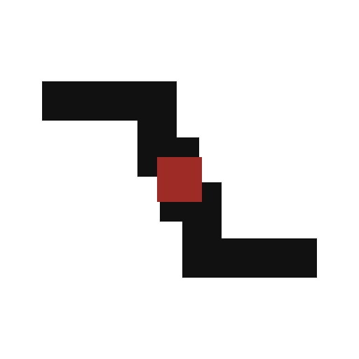

01 / RELATION
成事之契
两个主体从不同方向进入，在需求、能力和边界匹配时形成一次有效关系。中央朱砂不是火焰，而是事情真正被推进后留下的“成事印”。
星火者创业实践共同体
- 优势
- 结构清楚、边界感强，适合共同体与 FDE 项目协作。
- 风险
- 需要后续微调，避免被看成物流路径或流程软件。
64px
32px
16px
先选品牌思想，再进入比例、字标和应用系统精修。

两个主体从不同方向进入，在需求、能力和边界匹配时形成一次有效关系。中央朱砂不是火焰，而是事情真正被推进后留下的“成事印”。
星火者不以群消息和身份感证明价值。黑色路径代表持续推进，朱砂刻度记录一次真实行动，让“做过什么”成为共同体的判断依据。

每个人有自己的方向和事业，不因加入共同体而被组织吞没。两条路径持续向前，只在合适的项目节点形成一次有边界的连接。
64px星火者首先是一种实践者身份。以现代几何方式重构汉字“者”，朱砂斜笔既像行动留下的划痕，也像仍在生长的火种。